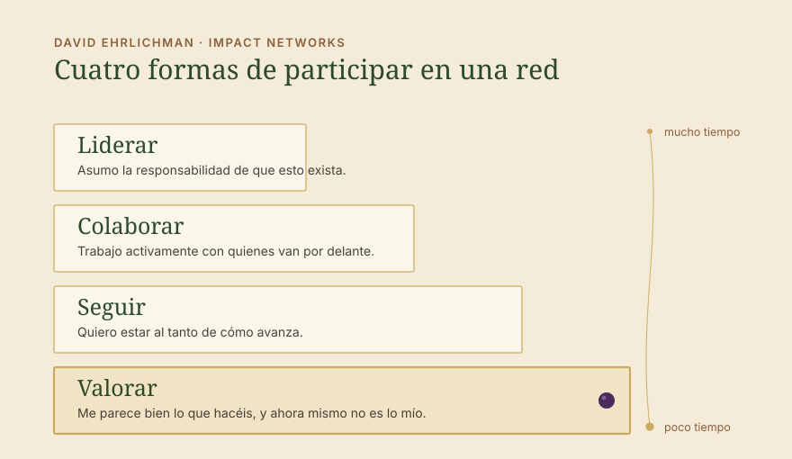
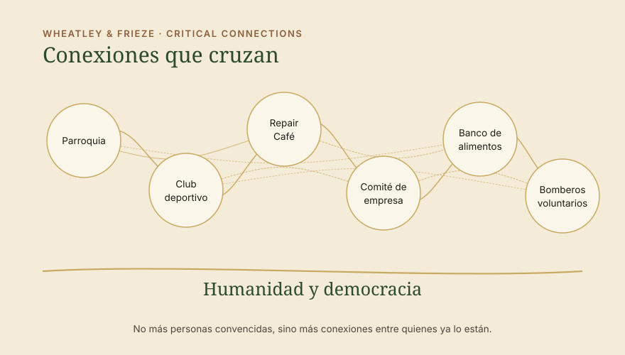

Impulso · Pensar la sociedad como una red: la democracia y la humanidad ya no son algo evidente
Las elecciones en Sajonia-Anhalt han mostrado lo cerca que estamos de la catástrofe. Por alarmante que sea el resultado, hay que alegrarse de que la AfD se haya quedado una vez más por debajo de la mayoría absoluta. Hemos ganado algo de tiempo y deberíamos aprovecharlo. Para nosotros, aprovecharlo significa formar un nosotros que vaya más allá de los temas concretos, de modo que volvamos a reforzar la base. Esa base la tenemos desde hace mucho, sencillamente hemos dejado de verla. Y el trabajo en red sobre ella empieza mucho antes de lo que pensamos.

La base
Lo que compartimos sin verlo
La base es una cierta forma de humanidad, es decir, la dignidad de la persona, junto con los derechos democráticos fundamentales. Humanidad y democracia, y eso debería bastar para pensar en redes.
Quien cumple con eso hace algo bueno. El banco de alimentos con su comedor, el grupo local de izquierdas con su repair café, el club deportivo, el comité de empresa o también la parroquia. La lista es larga.
Y aunque probablemente estemos de acuerdo con todo ello, ya no vemos cuál es la base y olvidamos que nos parece bien. Según nuestro propio punto de vista criticamos la religión, la actividad económica de la empresa, el club deportivo o que las personas sin hogar no trabajen. Lo que apenas vemos ya, porque durante mucho tiempo fue la base de la sociedad y por tanto algo evidente, es que podríamos reconocer y valorar mucho más a menudo lo que las personas hacen y pretenden, sin tener que estar de acuerdo con todo.
En lugar de reconocer la intención y la actividad, criticamos. Precisamente en la iglesia te implicas. Estás con la izquierda en el grupo local. Con el deporte no cambia nada. Para qué te ocupas de los aprendices si la empresa se va a pique de todos modos. Esto ocurre sobre todo allí donde las personas no se encuentran en torno a un tema común, sino en la familia o en contextos más sueltos. Justo ahí falta el apoyo solidario a lo que hace el otro.
Todos deberíamos entender que aquello que durante 75 años pudimos dar por sentado aquí no seguirá estando garantizado, y que conservarlo es ahora trabajo. Si queremos que la democracia y la humanidad sigan formando parte de nuestro sistema social, entonces también deberíamos aprender a expresar tolerancia, reconocimiento y valoración. No tengo que querer lo que hace la otra persona. Tengo que reconocer que lo hace con buena intención y que respeta la democracia. La diferencia no hace falta discutirla hasta el final ni disolverla. Puede quedarse, y en el fondo es aquello sobre lo que se asienta nuestra democracia: la libertad.


A qué nos enfrentamos
El atajo autoritario a través del miedo y la pertenencia
La extrema derecha crece a una velocidad alarmante, y en parte se debe a sus estructuras autoritarias. Las personas a las que allí se arrastra emocionalmente una vez, casi siempre a través del miedo, ceden de golpe buena parte de esa libertad y confían en las personas. Lo que esas personas digan después pasa enseguida por opinión propia, y hacia fuera eso parece cohesionado. El sentimiento de pertenencia surge rápido, pero en la mayoría se basa todavía, eso espero, en una percepción falsa y no en la propia opinión. Ahora bien, si en el lado democrático la pertenencia no es una opción, ¿cómo pensamos invertir la tendencia? ¿Hay una alternativa?
Lo que deberíamos oponerle está formado por muchas personas que deciden por sí mismas y se apoyan entre ellas. Eso lleva más tiempo y es trabajo, y a cambio aguanta más, porque no depende de una sola persona. Para que esté ahí en el momento en que se necesita, tenemos que crear las conexiones activamente. Y ese sentimiento de pertenencia también deberíamos generarlo, sobre una base sólida. Sobre la base de la democracia y la humanidad, pertenecemos. Nosotros somos la sociedad.
Cuatro formas de participar
El trabajo en red empieza con la valoración
En Impact Networks, David Ehrlichman describe cómo surgen las redes que quieren mover algo en la sociedad. Una de sus observaciones es que en las redes hay distintos niveles. Las personas participan de cuatro formas distintas, y una red vive de que las cuatro cuenten.
Liderar. Asumo la responsabilidad de que esto exista.
Colaborar. Trabajo activamente con quienes van por delante.
Seguir. Quiero estar al tanto de cómo avanza.
Valorar. Me parece bien lo que hacéis, y ahora mismo no es lo mío.

Aquí se trata de valorar. Las dos primeras cuestan tiempo, y casi nadie tiene tiempo para más de una o dos causas. La tercera también tiene su límite, porque nadie puede mantenerse informado de todo ni suscribirse a todos los boletines.
La cuarta es la que pasamos por alto. No cuesta tiempo, ni dinero, ni afiliación, y es el comienzo de todo lo demás. Lo que hoy ocupa su lugar es la crítica desde los niveles superiores. A quien pone algo en marcha se le dice por qué es lo equivocado o por qué es poco. Eso quita las ganas, y por eso lo dejan muchos que habrían seguido. La valoración los mantiene en el trabajo, y ese es el refuerzo que hace falta. ¡Qué bien que te impliques en tu causa! Aquí surge la red que llamamos sociedad, que durante tanto tiempo fue algo evidente y por desgracia ya no lo es. Aquí empieza el fortalecimiento de la sociedad civil. Eso es hoy antifascismo.
En la práctica
Cómo se ve esto en el día a día
Como votante conservadora, escribir al repair café del grupo local de izquierdas que está bien todo lo que allí se repara. Como persona de izquierdas, decirle al tío del club de boxeo lo fuerte que es que se ocupe de los jóvenes. Como jefa, decirle al presidente del comité de empresa que está bien que se implique, con lo agotador que esto resulta ahora para todos.
Como alguien a quien la iglesia no le dice nada, decirle a la parroquia que su comedor da de comer a personas cada semana. Como activista climática, decirle al club de tiro que reúne en el pueblo a más gente que cualquier otro acto. Como persona de ciudad, decirle a los bomberos voluntarios del campo que está bien que alguien salga de noche. Como empresario, decirle al banco de alimentos que está bien que exista.
Basta un correo breve, un «qué bueno» en la conversación de sobremesa. Me parece bien lo que hacéis, seguid así. Quien lo recibe sigue trabajando de otra manera al día siguiente, y quien lo escribe tiene una conexión que antes no existía.
Esto vale también allí donde alguien elige medios que yo no elegiría. Las acciones no violentas que llegan al límite de la ley tienen detrás una causa, y esa causa la puedo entender sin apoyar la acción. Expresar la valoración por el compromiso, justo cuando la acción se critica, marca una diferencia importante para el fortalecimiento de la sociedad.
Conservar la sociedad
Conexiones a lo ancho del espectro democrático

En 2007, Meg Wheatley y Deborah Frieze escribieron para el Berkana Institute una frase que nos ayuda: en lugar de preocuparnos por una masa crítica, nuestro trabajo consiste en propiciar conexiones críticas. No se trata, por tanto, del número de personas convencidas, sino de las conexiones entre quienes quieren conservar el núcleo democrático.
Hoy necesitamos esas conexiones a lo ancho de todo el espectro democrático, de la izquierda hasta la democracia cristiana. Surgen con más facilidad en la sociedad civil que entre los partidos. De los partidos poco cabe esperar ahora mismo, porque la polarización hace tiempo que pasa entre ellos. Cuando las conexiones están abajo, arriba se vuelve posible más cosas. Entonces un partido democristiano en Sajonia-Anhalt puede decir que gobernará los próximos cuatro años junto con los demás partidos democráticos y verá qué se puede mover en común.
De eso se trata al conservar la sociedad. La polarización dentro del espectro democrático es lo que nos está dañando ahora, y empuja a la gente hacia la derecha. El reconocimiento y la valoración de la acción democrática y humana, posible en tantísimos sitios, le quitan el terreno.
Fortalecer de verdad a la sociedad civil en toda su amplitud, sobre la base de la humanidad y la democracia, conserva la sociedad tal como la conocemos. Eso es lo que todos podemos hacer. Está claro que hay trabajo más allá de esto para impedir mayorías de la extrema derecha, pero esta debería ser la base en la que todos colaboremos. Si no es ahora, ¿cuándo?
Expresemos todos más reconocimiento y valoración, y hagámoslo allí donde nos cuesta, donde las conexiones son críticas y donde deberíamos admitir: esto es democrático, detrás hay una causa que quiere algo positivo para las personas. Seguid así, esto es lo que necesitamos.
→ Systems Change → Coopera con nosotros
Fuentes
- Ehrlichman, D.: Impact Networks. Create Connection, Spark Collaboration, and Catalyze Systemic Change. Berrett-Koehler, Oakland 2021.
- Wheatley, M.; Frieze, D.: Using Emergence to Take Social Innovations to Scale. The Berkana Institute, in: Fieldnotes, Winter 2007.